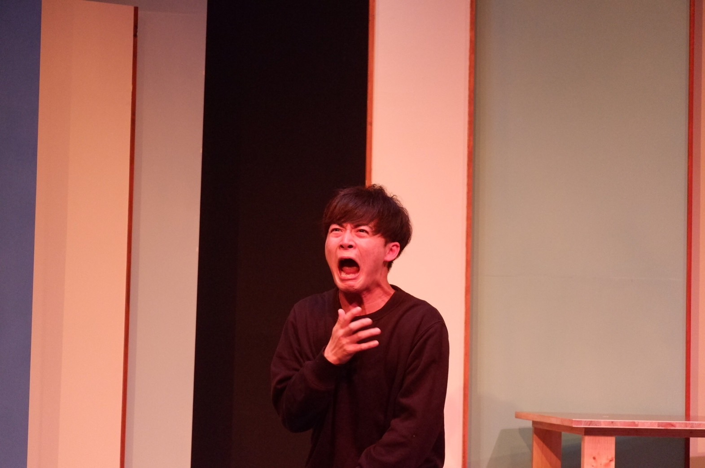
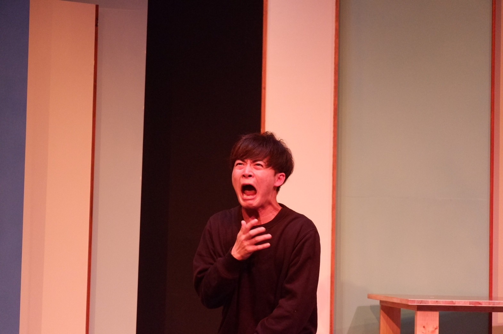

ACTOR
力徳 旺
PROFILE
力徳 旺 RIKITOKU AKIRA
1997年2月23日生まれ / 熊本県熊本市出身
趣味 自主映画・アクション動画制作、散歩、料理
特技 空手（初段）、バレー、高速手たたき
資格 普通自動車運転免許、CGクリエイター検定ベーシック


WORKS
短編映画
- 『Intersection』主演 2025年 / 監督：千脇大輔 / Yellow Film Labo制作 / 佐藤清役
- 『ノイズ』 2024年 / 監督：米一碧海 / 日本大学芸術学部放送学科卒業制作 / 新田役
- 『ほどけただけ』 2024年 / 監督：千脇大輔 / Yellow Film Labo制作 / ユウスケ役
- 『5movies』 2024年 / in-facto制作 / YouTuber役
- 『灯台の下で』主演 2023年 / 監督：林正春 / MOVIES-HIGH 23上映作品 / 浩太役
- 『吉日』主演 2023年 / 監督：鳥澤空良 / 第5回フェローズフィルムフェスティバル特別招待 / 星野役
- 『ヱリ子・サガ』 2023年 / 監督：石塚亘 / 第2回311ジコサポ映画祭監督賞 / 飛島詩音役


舞台
- 『音のない川』 2025年 / avenir'e 8th create / 作・演出：池内風 / 男1役
- 『ランプとブレーキ』主演 2025年 / TOKYO笹塚ボーイズ / 作・演出：川上一樹 / 長居久志役
- 『ココロゲソウ（心化粧）』 2024年 / セミコロン / 作・演出：藤井仁人 / 3作品出演（主演含む）
- 『最初の二十面相』 2024年 / 劇団身体ゲンゴロウ / 作・演出：菅井啓太 / 沼倉庄吉役
- 『サンタクロース、舟を漕ぐ』 2023年 / ACT企画 / 演出：西本健太郎 / 田崎旺太郎役
- 『この世が終わる前に』 2022年 / アンティークス / 作・演出：岡崎貴宏 / ショウ役
- 『硝子はオバサン』 2021年 / Jr.5 / 作・演出：小野健太郎 / 河内幸太役
- 『未来からの手紙』 2021年 / アンティークス / 作・演出：岡崎貴宏 / 坂上海斗・三宅役


 

Music Video
2025 Noime。『蝉』 主演：青年役 / 監督：山岳タケシ
2022 松尾竜平『英雄』 主演：青年役 / 監督：山岳タケシ
Streaming / Others
Netflix 『内さまワールド』 #25
2024年配信
アドリブコント企画仕掛け人役として出演
（即興演技によるシチュエーション芝居）